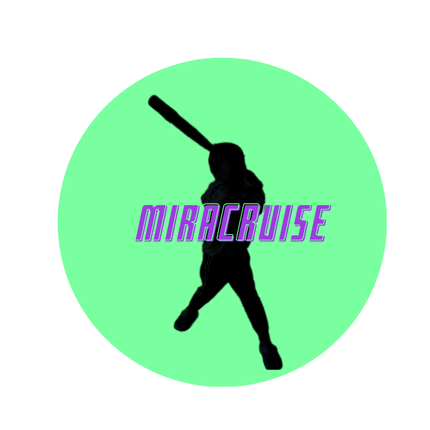
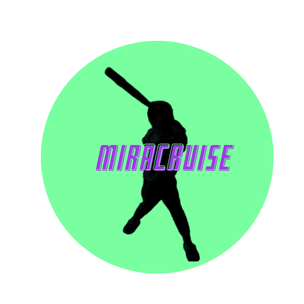

試合結果
VS |
 |
|---|

VS |
 |
|---|
6/14(金)
ユニコーンパチンカス宮城対ミラクルーズ
開始:16:42 終了17:48
| チーム | 1回 | 2回 | 3回 | 計 | H |
|---|---|---|---|---|---|
| ユニコーンパチンカス宮城 | 0 | 4 | 3 | 7 | 7 | ミラクルーズ | 3 | 2 | 3x | 8 | 9 |
| 勝利投手 |
|---|
| 佐藤海青(1勝0敗) |
| 敗戦投手 |
| 佐藤壮真(0勝1敗) |
| ミラクルーズ |
|---|
| 佐藤海青-佐藤圭-佐藤海青 |
| ユニコーンパチンカス宮城 |
|---|
| ミラクルーズ |
| 佐藤圭1号(3回3ラン 壮真) |
| 1 | 投打 | 佐藤壮真 |
|---|
| 1 | 打↓投打↓打 | 佐藤圭 |
|---|---|---|
| 2 | 打投↓打↓打投 | 佐藤海青 |
| チーム | 1回 | 2回 | 3回 | 計 | H |
|---|---|---|---|---|---|
| ユニコーンパチンカス宮城 | 0 | 4 | 3 | 7 | 7 | ミラクルーズ | 3 | 2 | 3x | 8 | 9 |
| 打順 | 選手 | 打数 | 安打 | 打点 | 1 | 2 | 3 | 4 | 5 | 6 | 7 | 8 | 9 | 10 | 11 | 12 | 13 | 14 | 15 | 16 | 17 | 18 | 19 | 20 |
|---|---|---|---|---|---|---|---|---|---|---|---|---|---|---|---|---|---|---|---|---|---|---|---|---|
| 1 | 佐藤壮真 | 16 | 7 | 7 | アウト | アウト | 二塁打 | 三振 | 二塁打> | 二塁打① | 二塁打① | 二塁打① | 四球 | アウト | 三振 | アウト | 二塁打 | アウト | 四球 | 四球 | 犠打① | 四球① | 二塁打② | アウト |
| 計 | 16 | 7 | 7 |
| 選手 | 投球回数 | 打者 | 安打 | 本塁打 | 四球 | 三振 | 自責点 |
|---|---|---|---|---|---|---|---|
| 佐藤壮真 | 3 | 16 | 9 | 1 | 1 | 1 | 8 |
| 3 | 17 | 9 | 1 | 1 | 1 | 8 |
| 打順 | 選手 | 打数 | 安打 | 打点 | 1 | 2 | 3 | 4 | 5 | 6 | 7 | 8 |
|---|---|---|---|---|---|---|---|---|---|---|---|---|
| 1 | 佐藤圭 | 8 | 3 | 4 | 四球 | アウト | 二塁打① | アウト | 三振 | 二塁打② | アウト | 走本③ |
| 2 | 佐藤海青 | 8 | 6 | 4 | アウト | 一塁打 | 二塁打② | 一塁打 | 二塁打 | アウト | 一塁打 | 二塁打 |
| 計 | 14 | 9 | 8 |
| 選手 | 投球回数 | 打者 | 安打 | 本塁打 | 四球 | 三振 | 自責点 |
|---|---|---|---|---|---|---|---|
| 佐藤海青 | 2 2/3 | 15 | 6 | 0 | 1 | 2 | 3 |
| 佐藤圭 | 1/3 | 5 | 1 | 0 | 3 | 0 | 4 |
| 3 | 20 | 7 | 0 | 4 | 2 | 7 |